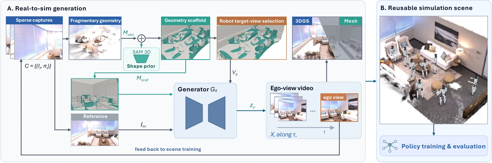
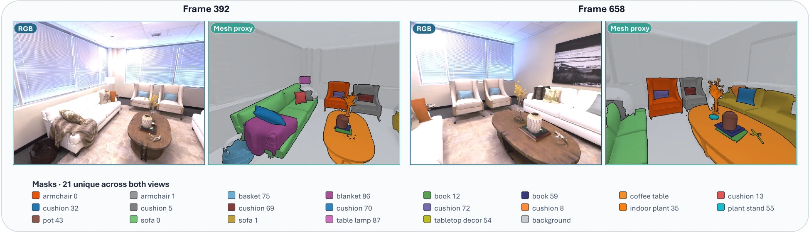
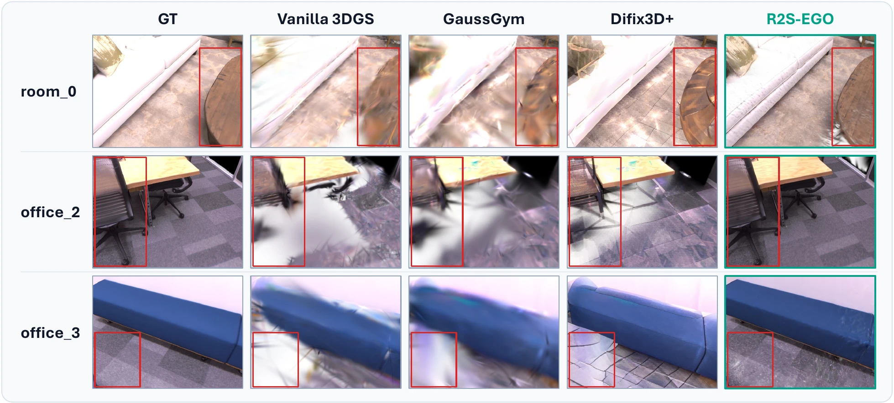
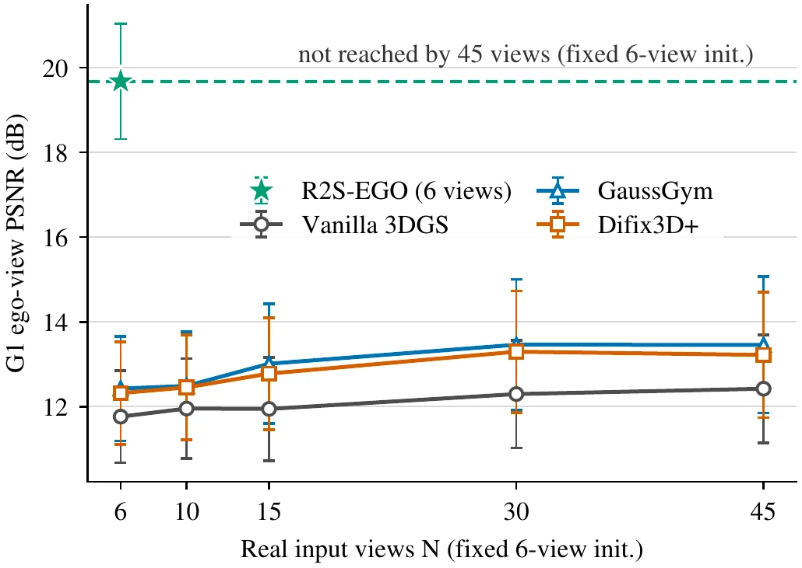
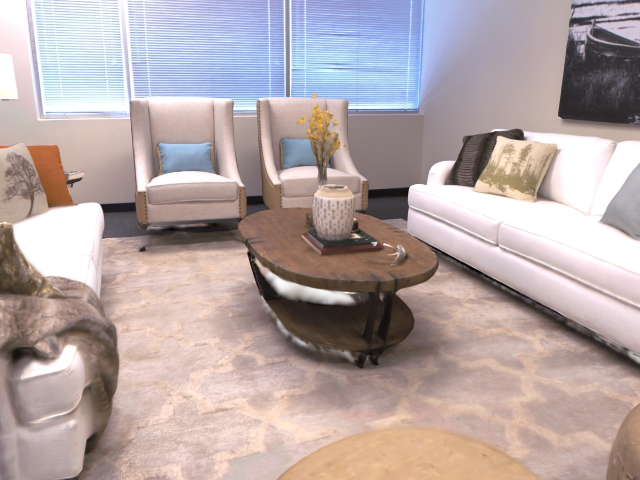

Simulation (left) and real Unitree G1 (right) policy rollouts. Real Unitree G1 policy rollout.
Abstract
Sparse real-to-sim captures often leave a reconstructed simulator under-supported at the egocentric views a robot actually visits. R2S-EGO refines such scenes with two complementary proxies: a behavior-scoped robot proxy defines executable mounted-camera queries and prioritizes current visual deficits, while a capture-anchored geometry proxy supplies view-aligned structural conditions. Their shared poses guide generation of registered ego observations that are added at lower weight during scene refinement. We evaluate the resulting appearance at frozen Unitree G1-mounted views in controlled Replica scenes and study transfer under one real-G1 sitting protocol.
Method

Behavior-scoped robot proxy. Simulator rollouts and mounted-camera kinematics define the executable query domain. Within it, fixed-budget selection prioritizes current visual deficits for which usable structural conditions exist.
Capture-anchored geometry proxy. Real capture fragments anchor aligned shape priors and residual reconstruction. Rendering this proxy supplies view-aligned layout, visibility, depth order, and occlusion for ego-view generation. Prior-completed surfaces remain structural hypotheses rather than verified scene truth.

Results


office_2 with a fixed six-view initializer.Table 1. Frozen ego-view appearance. Six registered inputs per scene; 48 frozen G1-mounted views across three controlled Replica scenes.
| Method | PSNR ↑ | SSIM ↑ | LPIPS-Alex ↓ |
|---|---|---|---|
| Vanilla 3DGS | 13.239 | 0.549 | 0.593 |
| GenFusion | 14.012 | 0.481 | 0.571 |
| Difix3D+ | 14.059 | 0.461 | 0.552 |
| GaussGym | 14.226 | 0.567 | 0.628 |
| R2S-EGO | 19.062 | 0.757 | 0.273 |
Table 2. Component ablation. Aggregate means over five paired seeds and 48 views.
| Variant | PSNR ↑ | SSIM ↑ | LPIPS-Alex ↓ |
|---|---|---|---|
| w/o ego video (initial asset) | 13.417 | 0.552 | 0.588 |
| w/o robot-proxy allocation | 16.182 | 0.661 | 0.406 |
| w/o SAM 3D grounding | 16.384 | 0.671 | 0.412 |
| w/o iterative refinement | 17.508 | 0.706 | 0.334 |
| Full R2S-EGO | 19.062 | 0.757 | 0.273 |
Metric scope & protocol notes
Robot and geometry proxies. The robot proxy is not a learned-policy occupancy model or arbitrary camera interpolation. Prior-completed geometry is not scene truth; no independent geometry or collision-accuracy metric is reported.
Figure 2. The correspondence annotations are not generator inputs and do not provide an independent geometry-accuracy metric.
Table 1. R2S-EGO is the mean over five pre-specified pipeline seeds; other methods are fixed runs. These full-reference metrics use Replica-rendered inputs and ground truth, not physical-scene image quality, and do not establish statistical significance or per-scene consistency.
Figure 4. This controlled-initialization PSNR sweep covers office_2, 16 cameras, five discrete input counts, and a fixed six-view initializer; it is not an end-to-end dense-recapture, total-compute, universal capture-saving, or geometry-equivalence comparison.
Table 2. Aggregate means only. The allocation ablation changes executable candidate construction and deficit ranking together, so it supports the coupled procedure rather than either effect alone.
Interactive Visual Comparison
Choose a scene and camera, then drag the divider to compare.

GaussGym R2S-EGOReal-Robot Evaluation
Representative real-G1 executions; Trial B is the safety-guarded condition. Clips are trimmed to motion onset and shown at real speed with equal 11.5 s durations. The same method ordering holds for all five policy seeds. Success requires at least 3 s of stable chair support; the tether remains slack and non-load-bearing.